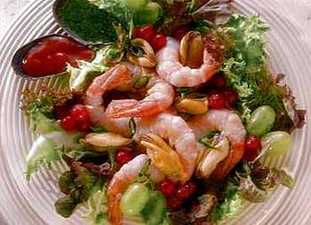

Welcome to Recetas de mariscos
Cazuela de mariscos | Recetas fáciles
2021.06.23 22:05Artículo agregado a carrito Iniciar sesión Crear cuenta Cuenta Favoritos Pedidos Cerrar sesión $0.00 0 Seleccionar Favoritos Promociones Cupones Recetas SÚPER $0.00 EXCLUSIVO ONLINE $0.00 Continuar con la compra Convertir a lista Vaciar Carrito Mi Cuenta Mis Favoritos Mis Pedidos Cerrar sesión Mi Carrito Súper $0.00 Exclusivos Online $0.00 Subtotal: $0.00 M.N. Comprar Vaciar Carrito Convertir a Lista Mis Listas Vaciar carrito
Los artículos se eliminarán de tu carrito y no podrán ser recuperados, ¿Desea continuar?
Cancelar Continuar Convertir a listaIngresa el nombre de tu lista
Cancelar Recetas Categorias Verano Deliciosas Recetas Menú Recetas por Categoría Tipo de AlimentoCazuela de mariscos
Verano
Tiempo:
1 hr(s)
Dificultad:
Media
Porciones:
6 personas
Tipo:
Comida
Tortitas de quinoa
Matcha bowl
Ensalada de granos
Palmitos rellenos
Leche de coco
Leche de almendra
Ensalada primavera
Sopa de setas
Ensalada de salmón
Agua de pepino
Ensalada Nicoise
Ensalada suiza
Pasta verde
Tortitas de papa
Charola de vegetales
Ensalada de col
Bowl dulce de quinoa
Ensalada de sandía y tomates
Poke bowl
Acai bowl
Bowl italiano
Bowl de avena
Bowl vegano
Guarnición de edamames
Ensalada mixta
Agua de avena
Ensalada detox
Espárragos a la plancha
Ceviche vegetariano
Coctel de camarón
Cuscús
Licuado de chocolate
Chapata
Pescado empapelado
Guarnición de verduras
Ensalada verde
Sopa de flor de calabaza
Crema de espárragos
Té de jengibre
Ceviche de plátano
Sopa de quinoa
Huevos rancheros
Hotcakes
Té de matcha latte
Barritas energéticas
Jugo de nopal
Té de alcachofa
Jugo desintoxicante
Jugo de betabel
Alcachofas rellenas
Portobello relleno
Ensalada de garbanzos
Ensalada de lentejas
Ensalada mediterránea
Aguacate relleno
Ensalada Waldorf
Ensalada César
Waffles multigrano
Crema de zanahoria
Chips de camote
Salmón a la parrilla
Pastel de zanahoria
Hummus
Pan sin gluten
Pollo a la jardinera
Salmón al horno
Filete de róbalo
Superama Quiénes Somos Directorio de Tiendas Garantías Aviso de Privacidad Términos y Condiciones Legales Propiedad Intelectual Trabaja con nosotros Servicios al cliente Contáctanos Horarios y teléfonos Formas de pago y entregas Facturación electrónica Servicios en Tienda Mapa del Sitio Modalidades de entrega Novedades Cupones Sabor y estilo Lleva 3 y Paga 2 Información Corporativa Wal-Mart México Wal-Mart Supercenter Sam's Club México Cashi ¿Necesitas Ayuda? Llámanos al 800 3678 737 Escribe al 55 5134 0034Horarios
Venta: 8:30 - 18:30
Atención al cliente: 8:00 - 20:00 Preguntas Frecuentes Superama ¿Quiénes Somos? Directorio de Tiendas Garantías Aviso de Privacidad Términos y Condiciones Legales Propiedad Intelectual Trabaja con nosotros Servicios al cliente Contáctanos Horarios y teléfonos Formas de pago y entregas Facturación electrónica Servicios en Tienda Mapa del Sitio Modalidades de entrega Novedades Hot Days 2021 Paga 2, llévate 3 Buena Semana Cupones Sabor y estilo Lleva 3 y Paga 2 ¿Necesitas Ayuda? ¿Necesitas Ayuda? Llámanos al 800 3678 737 Escribe al 55 5134 0034
Horarios
Venta: 8:30 - 18:30
Atención al cliente: 8:00 - 20:00 Preguntas Frecuentes Información Corporativa Wal-Mart México Wal-Mart Supercenter Sam's Club México
Los precios publicados en la página pueden variar con respecto a los publicados en tienda.
*La información y consejos citados de la Revista: Superama Sabor y Estilo, se difunden para fines informativos y/o recomendatorios.
Wal Mart de México, S.A.B. de C.V., no se hace responsable de los contenidos generales publicados en dicha revista.
Todos los derechos reservados
Superama ® 2021
El envío de la información fue exitoso Lo Sentimos El envío de la información fue exitoso Aceptar Artículo con baja disponibilidad Text Aceptar Error. Favor de enviar nuevamente Error. Favor de enviar nuevamente Productos no disponiblesLos siguientes productos no están en tu tienda preferida:
Cerrar Cambio de dirección / Tienda Estás cambiando tu dirección y tienda, algunos productos no están disponibles, estos artículos se borrarán de tu carrito: ¿Estás seguro que desea cambiar de dirección? Cancelar Aceptar Importante El número de promociones permitidas para este producto son , el resto se cobrara a precio general
Solo puedes agregar promociones a tu carrito.
Cancelar Aceptar Aceptar Importante El número de promociones permitidas para este producto son , el resto se cobrara a precio general Solo puedes agregar promociones a tu carrito. Cancelar Aceptar AceptarÚnicamente se aplicara veces la promoción, el resto se cobrara a precio general
Cancelar Aceptar Cambio de dirección / TiendaEstás cambiando tu dirección y tienda, algunos productos no están disponibles, estos artículos se borrarán de tu carrito:
Aceptar Descubre los productos
que entregamos a tu ubicación
Elige una tienda
Código Postal
Tienda
Elige una tienda*Costo de envio aproximado
ContinuarSi ya tienes una cuenta
Ingresa¿Nuevo en Superama?
Crear una cuenta PromocionesHas excedido el límite de las promociones permitidas, en este momento únicamente puedes aplicar a N Promociones, Ver términos y condiciones(Envía a el contenido de términos y condiciones
Ver términos y condiciones
Aceptar Has excedido el límite de las promociones permitidas, en este momento únicamente puedes aplicar a promociones. Ver términos y condiciones Aceptar Eliminar producto ¿Estás seguro que quieres eliminar este producto? Cancelar Aceptar Agregar una lista Crear una lista Agregar a lista
Ingresa el nombre de tu lista
Selecciona una lista que hayas creado previamente.
Elige una lista Aceptar Cancelar Agregar notasIngresa un comentario para tu producto:
Aceptar Cancelar En breve continuarás con tu compra.También puedes vivir otra experiencia de hacer el súper en nuestra app.
Descargar
Sabemos lo importante que es recibir tu compra. Por eso, te invitamos a realizar tu pedido en Walmart.
Ir a Walmart
Sabemos que recibir tus compras es lo más importante. Por esta ocasión te invitamos a hacer tu súper en Walmart.
Agradecemos tu comprensión.
Ir a Walmart
En breve continuarás con tu compra.
También puedes vivir otra experiencia de hacer el súper en nuestra app.
Descargar
Sabemos lo importante que es recibir tu compra. Por eso, te invitamos a realizar tu pedido en Walmart.
Ir a Walmart
Sabemos que recibir tus compras es lo más importante. Por esta ocasión te invitamos a hacer tu súper en Walmart.
Agradecemos tu comprensión.
Ir a Walmart
